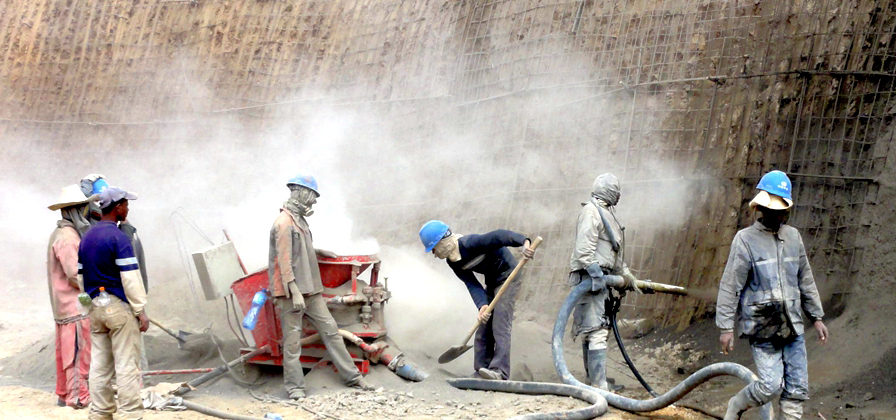
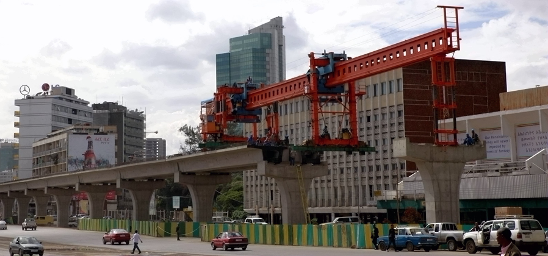
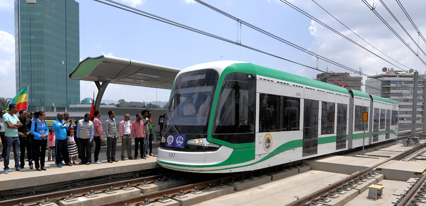
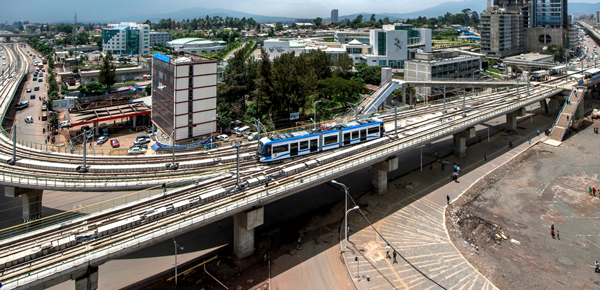

/ 越来越多的中国企业走向海外,倡导的合作共赢的理念和行动 /
首页
亚的斯亚贝巴轻轨
为了有效解决亚的斯亚贝巴中心城区的交通问题，埃塞政府决定修建该轻轨工程。
中国中铁的建设者们克服工程线路长、规模大、任务重、工期紧，物质匮乏等重重困难。
隧道喷锚

轻轨连接了郊区主要居民区和市中心的商务区，大大提高了这座城市的出行效率，
成为当地最受欢迎的出行方式。运营一年半以来，当前日均客流量持续保持在9-11万人次之间，至2017年四月底，开累客流量已经达到6000万人次。
最大日客流量达18.5万人次，总客运收入突破1.7亿比尔。
轻轨架梁

亚的斯亚贝巴城市规划了两条轻轨线路，包括东西线和南北线，总长度约为75 公里。工程总投资4.75 亿美元，于2012 年1 月31 日开工，2015年12月30日完工。
南北线于2015年9月20日开通运营，东西线于2015年11月10日开通运营。
正式通车

轻轨不但使市民的出行更加便捷，也推动了相关知识技能在当地的普及。
第一批130名埃方客车司机获得埃塞交通部颁发的轻轨客车司机驾驶证，已经可以独立驾驶。在轻轨车辆段内，
有10多名亚的斯亚贝巴大学机械专业的学生。这些实习的学生，就是埃塞俄比亚轨道交通的未来。
轻轨全景
